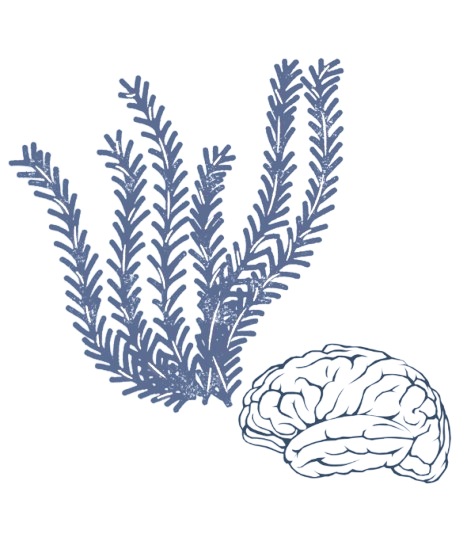

Marine biology, the study of life in oceans and other saltwater environments, explores the complex interactions between aquatic organisms and their ecosystems. It delves into topics ranging from the behaviors of marine mammals to the ecological roles of coral reefs. Psychology, the scientific study of mind and behavior, may seem distinct from marine biology at first glance. However, the two fields intersect in fascinating ways, particularly in the areas of animal behavior, human interaction with marine environments, and the psychological benefits of marine life.